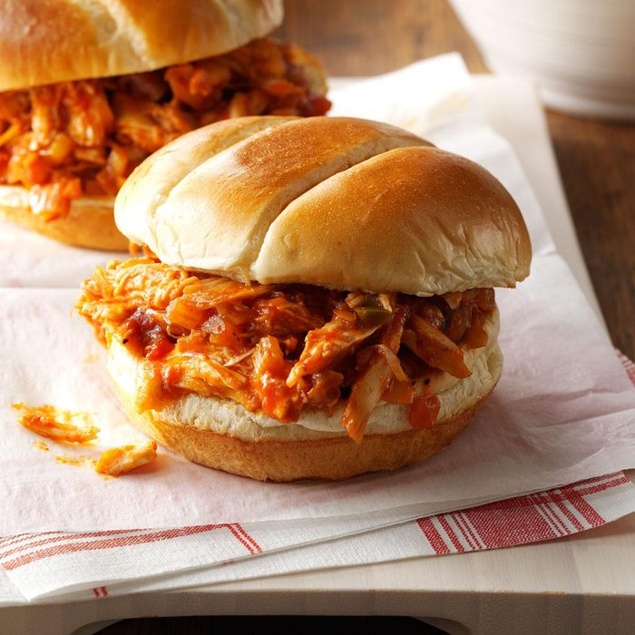

Barbecue Chicken Sandwich

Description
This is how you make one of the best
types of sandwiches, one that you
can have either warm or cold
Ingredients Needed
- 1/4 onion(s), small, minced
- 1 clove garlic, minced
- 2 1/2 tbsp ketchup
- 1 1/2 tbsp honey/
- 1 tbsp cider vinegar
- 1 1/2 tbsp brown sugar
- 1/2 tbsp Worcestershire sauce
- 1 pinch salt
pinch pepper, freshly ground lettuce,
for garnish tomato(es), sliced, for garnish
onions(s), sliced,for garnish
- 2 tsp olive oil
- 1 boneless, skinless chicken breast(s), about 140 g
- 1 Kaiser roll(s)
Steps Needed
- Pre-heat your BBQ to meduim heat
- Heat oil in a skillet over medium heat
and fry the onion and garlic. Add ketchup,
honey, brown sugar, cider vinegar,
Worcestershire sauce, salt and pepper,
Cook this mixture for a few minutes to thicken
the sauce. Remove from heat and pour half the
sauce into a bowl. Let stand.
- Add the raw chicken to the bowl with the BBQ
sauce and coat well. Discard this sauce.
- Cook chicken on the BBQ for 5-7 minutes
a side or until the temperature registers
165 degrees F with a digital meat thermomet.
- Using the remaining BBQ to brush over your grilled chicken.
- Serve chicken on previously toasted Kaiser roll,
topped with lettuce, tomato and onion.